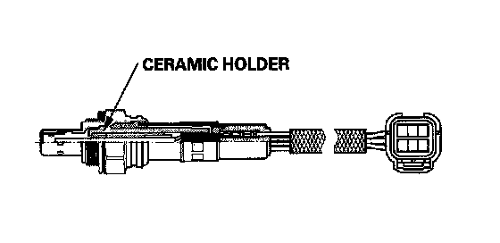
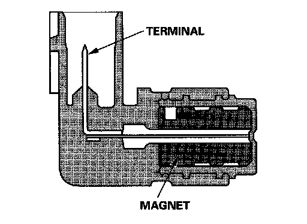
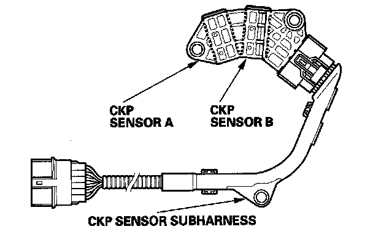
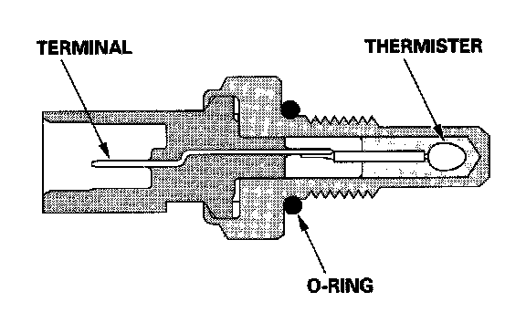
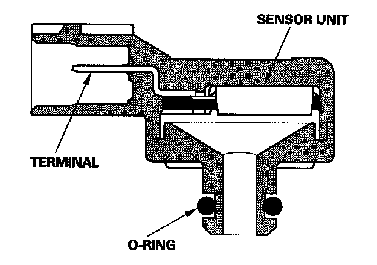
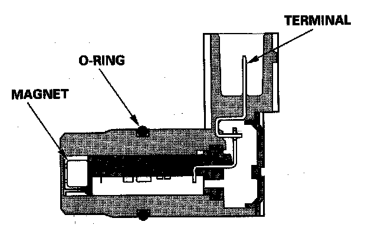
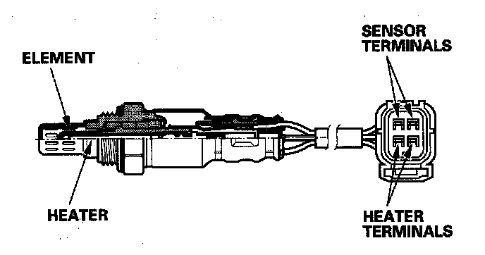
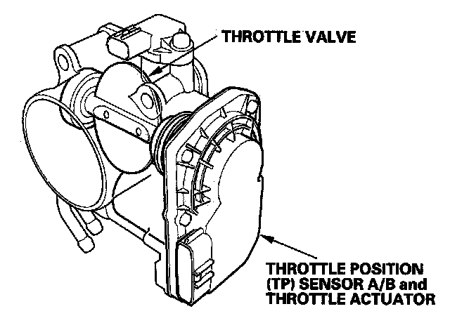

PGM-FI System
PGM-FI SystemThe programmed fuel injection (PGM-FI) system is a sequential multiport fuel injection system.
Alternator Control
The alternator signals the PCM during charging.
Air Conditioning (A/C) Compressor Clutch Relay
When the PCM receives a demand for cooling from the A/C system, it delays the compressor from being energized, and enriches the mixture to assure smooth transition to the A/C mode.

Air Fuel Ratio (A/F) Sensor
The A/F sensor operates over a wide air/fuel range. The A/F sensor is installed upstream of the TWC, and sends signals to the PCM which varies the duration of fuel injection accordingly.
Barometric Pressure (BARO) Sensor
The BARO sensor is inside the PCM. It converts atmospheric pressure into a voltage signal that is used by the PCM to modify the basic duration of the fuel injection discharge.

Camshaft Position (CMP) Sensor
The CMP sensor input is used by the PCM to determine ignition timing at start up (cranking) and when crank angle is abnormal.

Crankshaft Position (CKP) Sensor
The CKP sensor detects crankshaft speed and is used by the PCM to determine ignition timing and timing for fuel injection of each cylinder, as well as detecting engine misfire.

Engine Coolant Temperature (ECT) Sensor 1/Engine Coolant Temperature (ECT) Sensor 2
ECT sensors 1 and 2 are temperature dependent resistors (thermistors). The resistance decreases as the engine coolant temperature increases.
Ignition Timing Control
The PCM contains the memory for basic ignition timing at various engine speeds and manifold absolute pressures. It also adjusts the timing according to engine coolant temperature.
Injector Timing and Duration
The PCM contains the memory for basic discharge duration at various engine speeds and manifold pressures. The basic discharge duration, after being read out from the memory, is further modified by signals sent from various sensors to obtain the final discharge duration.
By monitoring long term fuel trim, the PCM detects long term malfunctions in the fuel system and sets a diagnostic trouble code (DTC).

Knock Sensor
The knock control system adjusts the ignition timing to minimize knock.
Malfunction Indicator Lamp (MIL) Indication (In relation to Readiness Codes)
The vehicle has certain "readiness codes" that are part of the on-board diagnostics for the emissions systems. If the vehicle's battery has been disconnected or gone dead, if the DTC's have been cleared, or if the PCM has been reset, these codes are reset. In some states, part of the emissions testing is to make sure these codes are set to complete. If all of them are not set to complete, the vehicle may fail the test, or the test cannot be finished.
To check if the readiness codes are set to complete, turn the ignition switch ON (II), but do not start the engine. The MIL will come on for 15-20 seconds. If it then goes off, the readiness codes are complete. If it flashes five times, one or more readiness codes are not set to complete. To set each code, drive the vehicle or run the engine as described in the procedures.

Manifold Absolute Pressure (MAP) Sensor
The MAP sensor converts manifold absolute pressure into electrical signals to the PCM.

Mass Air Flow (MAF) Sensor/Intake Air Temperature (IAT) Sensor
The mass air flow (MAF) sensor/intake air temperature (IAT) sensor contains a hot wire and a thermistor. It is located in the intake air passage. The resistance of the hot wire and thermistor change due to intake air temperature and air flow. The control circuit in the MAF sensor controls the current to keep the hot wire at a set temperature. The current is converted to voltage in the control circuit, then output to the PCM.

Output Shaft (Countershaft) Speed Sensor
This sensor detects countershaft speed.

Secondary Heated Oxygen Sensor (Secondary HO2S)
The secondary HO2S detects the oxygen content in the exhaust gas downstream of the warm up three way catalytic converter (WU-TWC), and sends signals to the PCM. To stabilize its output, the sensor has an internal heater. The PCM compares the HO2S output with the A/F sensor output to determine catalyst efficiency. The secondary HO2S is on the WU-TWC.
Electronic Throttle Control System
The throttle is electronically controlled by the electronic throttle control system. Refer to the system diagram to see a functional layout of the system.
Idle control: When the engine is idling, the PCM controls the throttle actuator to maintain the proper idle speed according to engine loads.
Acceleration control: When the accelerator pedal is pressed, the PCM opens the throttle valve depending on the accelerator pedal position (APP) sensor signal.
Cruise control: The PCM controls the throttle actuator to maintain the set speed when cruise control is operating. The throttle actuator takes the place of the cruise control actuator.

Accelerator Pedal Position (APP) Sensor
As the accelerator pedal position changes, the sensor varies the signal voltage to the PCM.

Throttle Body
The throttle body is a single-barrel side draft type. The lower portion of the throttle valve is heated by engine coolant from the cylinder head to prevent icing of the throttle plate.